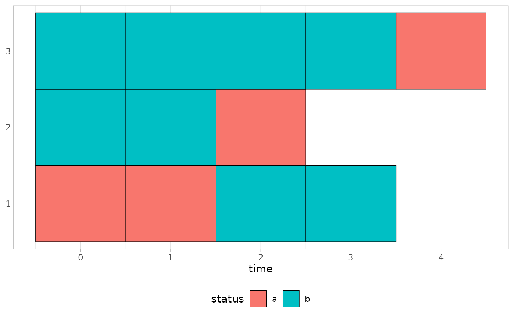
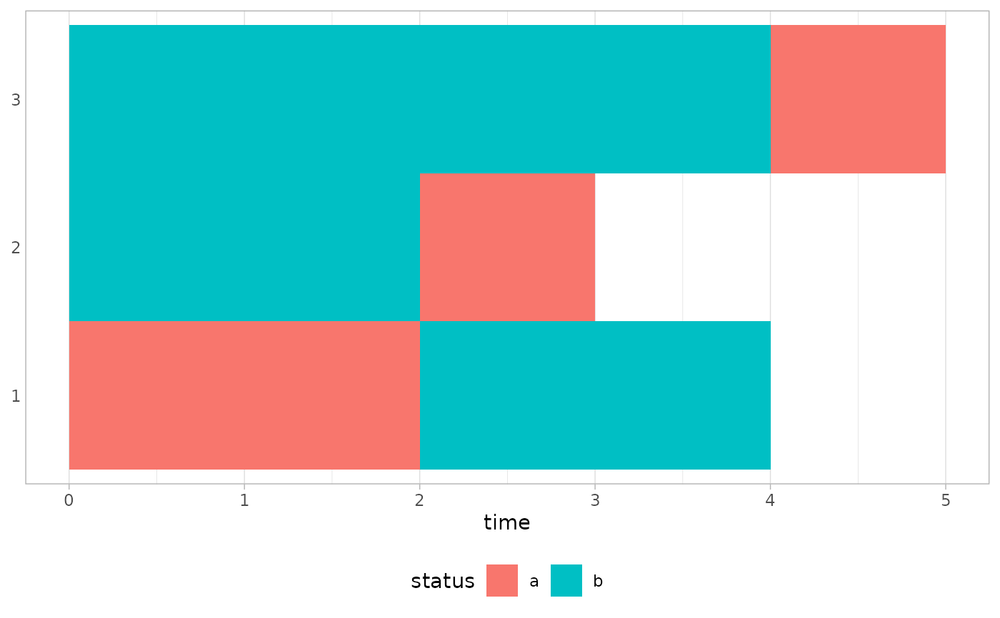
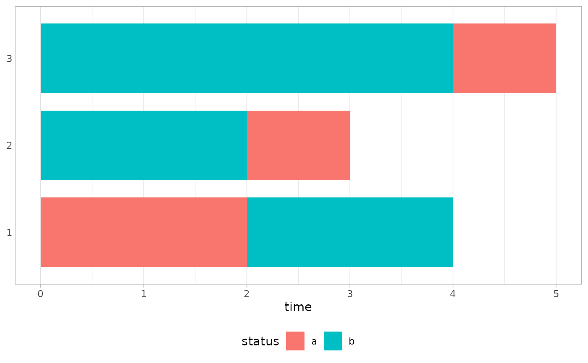
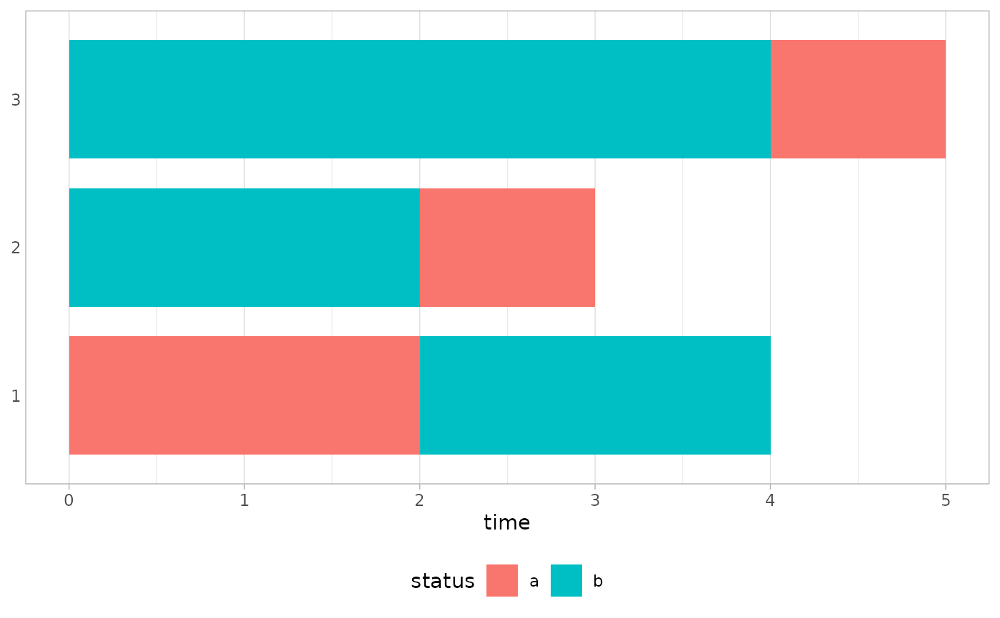

Create a trajectory index plot (similar to sequence index plot) from a data frame in long or period format.
Usage
plot_trajectories(
data,
id,
time,
fill,
by = NULL,
sort_by = NULL,
nudge_x = NULL,
hide_y_labels = NULL,
facet_labeller = ggplot2::label_wrap_gen(width = 50, multi_line = TRUE),
...
)
plot_periods(
data,
id,
start,
stop,
fill,
by = NULL,
sort_by = NULL,
nudge_x = NULL,
hide_y_labels = NULL,
facet_labeller = ggplot2::label_wrap_gen(width = 50, multi_line = TRUE),
...
)Arguments
- data
A data frame, a data frame extension (e.g. a tibble), or a survey design object.
- id
<
tidy-select>
Column containing individual ids.- time
<
tidy-select>
Time variable.- fill
<
tidy-select>
Variable mapped tofillaesthetic.- by
<
tidy-select>
Optional variables to group by.- sort_by
<
tidy-select>
Optional variables to sort trajectories.- nudge_x
Optional amount of horizontal distance to move.
- hide_y_labels
Hide y labels? If
NULL, hide them when more than 20 trajectories are displayed.- facet_labeller
Labeller function for strip labels.
- ...
Additional arguments passed to
ggplot2::geom_tile()- start, stop
<
tidy-select> Start and stop variables of the periods.
Note
plot_trajectories() assumes that data are stored in a long format (i.e.
one row per unit of time). You can use tidyr::pivot_longer() or
periods_to_long() to transform your data in such format. By default, tiles
are centered on the value of time. You can adjust horizontal position with
nudge_x. By default, each row is assumed to represent one unit of time and
represented with a width of 1. You can adjust tiles' width with width.
plot_periods() is adapted for period format with a start and a stop
variable. You can use long_to_periods() to transform your data in such
format. Beginning and ending of each tile is determined by start and
stop arguments.
For survey design objects, weights are not taken into account. Each individual trajectory as the same height.
Examples
d <- dplyr::tibble(
id = c(1, 1, 1, 1, 2, 2, 2, 3, 3, 3, 3, 3),
time = c(0:3, 0:2, 0:4),
status = c("a", "a", "b", "b", "b", "b", "a", "b", "b", "b", "b", "a"),
group = c("f", "f", "f", "f", "f", "f", "f", "m", "m", "m", "m", "m")
)
d |> plot_trajectories(id = id, time = time, fill = status, colour = "black")

d |> plot_trajectories(id = id, time = time, fill = status, nudge_x = .5)

d |> plot_trajectories(id = id, time = time, fill = status, by = group)
 d2 <- d |>
dplyr::mutate(end = time + 1) |>
long_to_periods(id = id, start = time, stop = end, by = status)
d2
#> # A tibble: 6 × 4
#> # Groups: id [3]
#> id time end status
#> <dbl> <int> <dbl> <chr>
#> 1 1 0 2 a
#> 2 1 2 4 b
#> 3 2 0 2 b
#> 4 2 2 3 a
#> 5 3 0 4 b
#> 6 3 4 5 a
d2 |> plot_periods(
id = id,
start = time,
stop = end,
fill = status,
colour = "black",
height = 0.8
)

d2 <- d |>
dplyr::mutate(end = time + 1) |>
long_to_periods(id = id, start = time, stop = end, by = status)
d2
#> # A tibble: 6 × 4
#> # Groups: id [3]
#> id time end status
#> <dbl> <int> <dbl> <chr>
#> 1 1 0 2 a
#> 2 1 2 4 b
#> 3 2 0 2 b
#> 4 2 2 3 a
#> 5 3 0 4 b
#> 6 3 4 5 a
d2 |> plot_periods(
id = id,
start = time,
stop = end,
fill = status,
colour = "black",
height = 0.8
)
